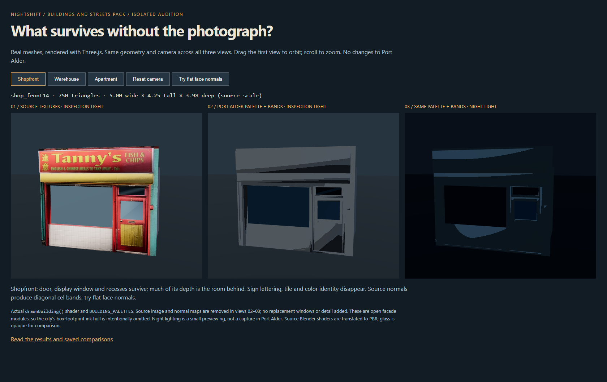
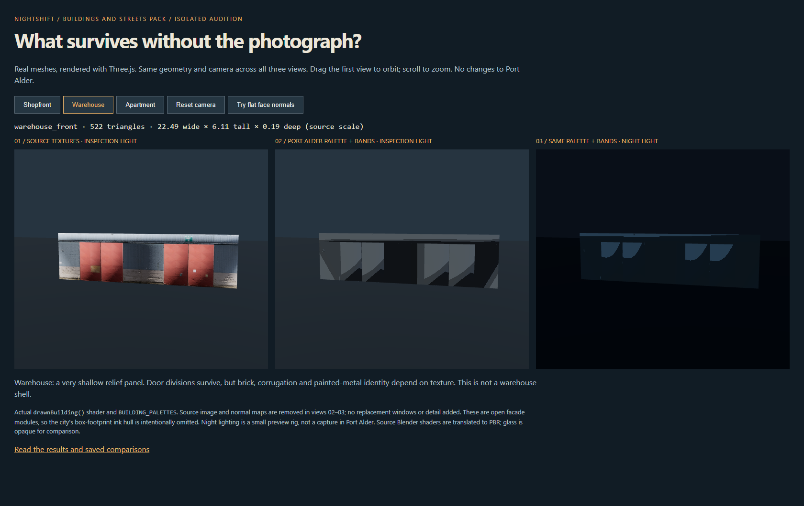
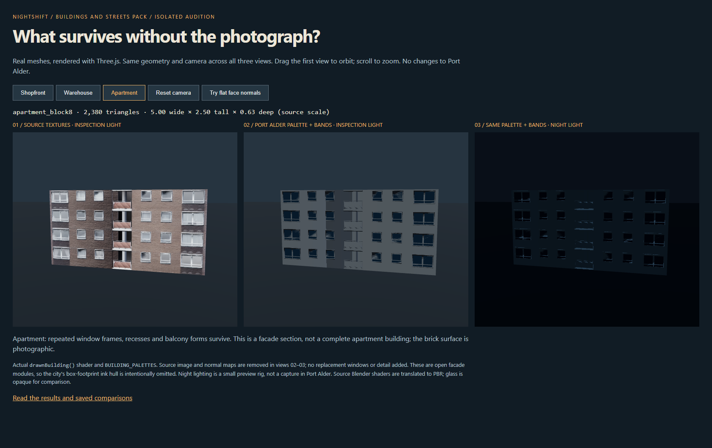
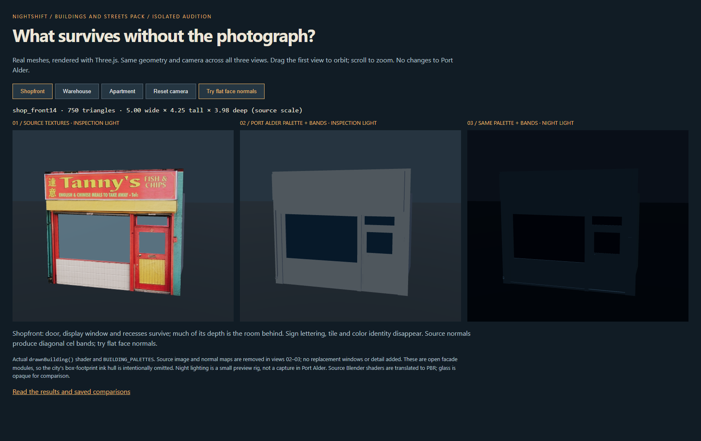

NIGHTSHIFT / ASSET AUDITION / 31 OCTOBER 2026Useful facade donors.
Not a whole-building kit.
Downloaded the pack and rendered three real models with source textures, then with Port Alder's actual building bands and palette. The apartment carries the strongest geometry. Much of the shop and warehouse identity lives in the photographs.
The map is untouched. These are isolated Three.js renders, not concept images. The middle and right views remove all source image maps. Material assignment and source normals still need work.
Open interactive audition · Full findings and reproduction
| Sample | Triangles | Assessment |
|---|
| Shopfront 14 | 750 | Usable openings and recesses; needs new color assignments, signage and normal cleanup. |
| Warehouse front | 522 | Thin relief facade; little help with the canopies, roofline or whole building we need. |
| Apartment block 8 | 2,380 | Best donor here: window frames and balconies survive without the brick photograph. |
01 / Shopfront
Most depth is behind the face, in the room. The sign, tiling and color arrangement supply much of its character. The source's smoothed normals create diagonal cel bands.

02 / Warehouse
22.49 units wide and only 0.19 deep. Door divisions remain, but the photographic metal and brick carry the surface. It is a frontage panel, not a warehouse shell.

03 / Apartment
Windows, recesses and balcony forms are real geometry. This is the most promising reusable part, though it still needs a building shell, proper scale and our own material segmentation.

A normal-map swap is not enough
Turning off photo textures exposes the source geometry's smoothing. Flat face normals remove the diagonal artifacts in this shop, but simplify its shading considerably. A useful import needs deliberate hard edges and material assignments.

Recommendation: retain as a donor library. For the main architectural kit, seek modeled shells, roof forms, entrances and modular trim with separate materials. This audition does not establish city-scale performance or approve map integration.
Mesh inventory · Browser checks · GLB validation · Pack source